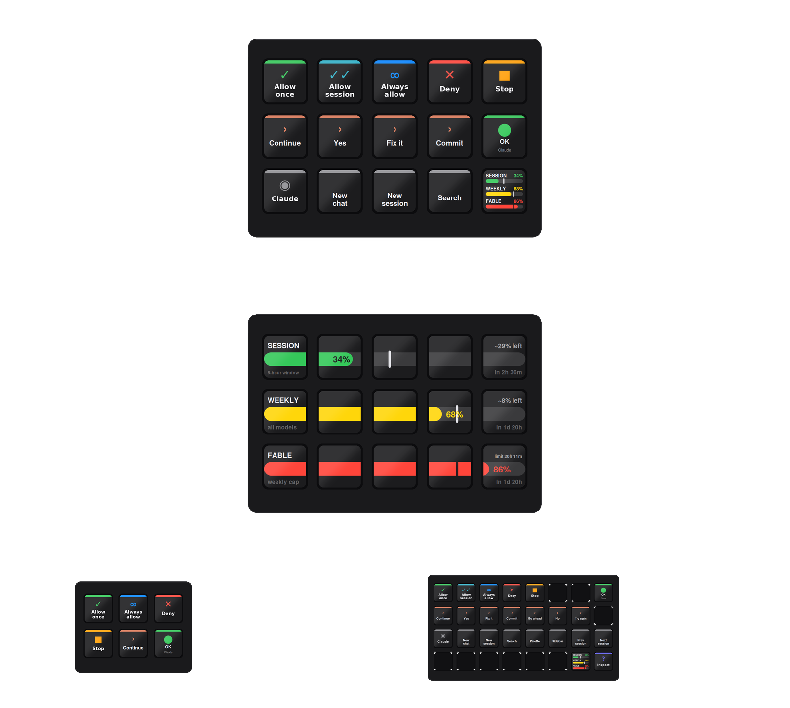
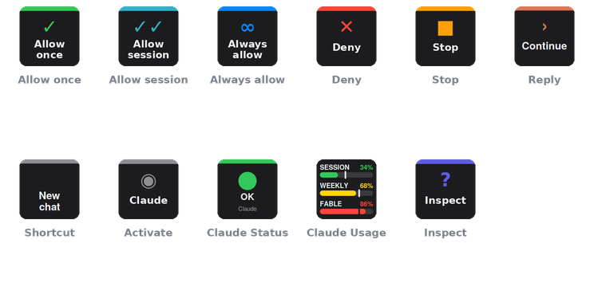
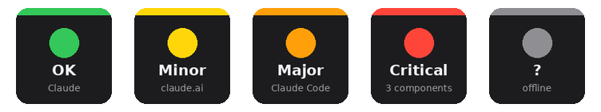

Allow once, allow always, deny, stop, "continue" — the prompts you answer fifty times a day, on physical keys. Plus Claude's own shortcuts and a live status.claude.com light.

The plugin adds a "Deck for Claude" group to the Stream Deck action list — the same way any other plugin does. The bundled profile is one arrangement; every key is replaceable.

| Allow once · Allow for session · Always allow · Deny | Presses that button in the permission prompt that is currently on screen. The desktop app has no keyboard shortcuts for these, so the helper finds the button through macOS Accessibility and presses it — about 50 ms. |
| Stop | Brings Claude to the front and presses Esc. |
| Reply | Types a text you configure ("continue", "yes", "fix it", "commit"…) and presses Return. Claude is activated first, so it never types into the wrong window. |
| Shortcut | Sends one of the app's own accelerators: new chat ⌘N, new Claude Code session ⌘⇧O, search ⌘⇧K, command palette ⌘K, sidebar ⌘B, previous / next session ⌘⇧[ ⌘⇧], side chat ⌘;. |
| Claude Status | Polls status.claude.com every minute. Green, yellow, orange, red follow the incident level; the small line names the affected component. Press opens the status page. |
| Activate Claude · Inspect | Bring the app forward; write every button label Claude exposes to a log — the repair tool for the day a button gets renamed. |

The installer carries three ready-made profiles — Claude (MK.2, 5×3), Claude Mini (3×2) and Claude XL (8×4) — and Stream Deck installs only the one that matches your device. Six essentials on the Mini; the full set with spare replies and every shortcut on the XL.
Nothing runs in the background besides the plugin itself. Each key press travels this path:
Node.js, Elgato SDK v2. A key press opens claudedeck://always-allow.
A tiny URL-scheme handler in ~/Applications, installed by the plugin on first start.
Swift helper inside the app. Walks Claude's accessibility tree and presses the matching button.
The prompt is answered. Works even when Claude isn't the front window.
com.4xsdev.claude.streamDeckPlugin — Stream Deck asks to install the plugin. It brings the Deck for Claude actions, a ready profile for your deck (Mini, MK.2 or XL), and the helper app.
macOS asks once for ClaudeDeck under System Settings → Privacy & Security → Accessibility. This is what lets it press buttons in Claude.
Or drag single actions from the "Deck for Claude" group onto keys of your own profile. Reply and Shortcut keys have settings in the inspector.
Physical keys for the tools you already use. All free and open source.
PTZ, presets, overlays and CamStreamer/CamSwitcher control for Axis cameras
Recording playback, PTZ and view controls for ACS Edge
Playback, cameras, PTZ presets and any hotkey for ACS 5 & Pro
Playback, alarms, tiles, PTZ, doors and any camera by logical ID for Security Desk